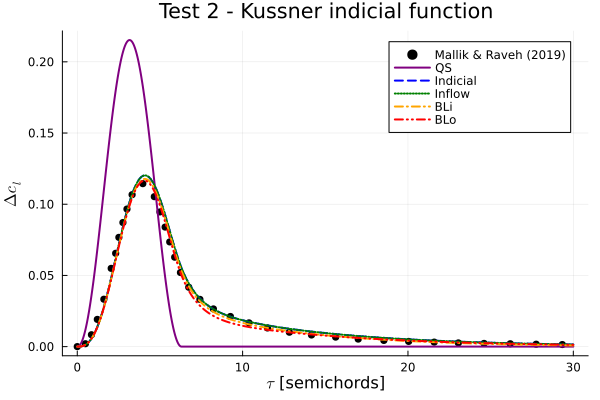
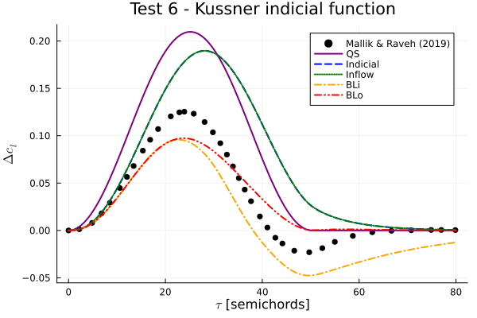
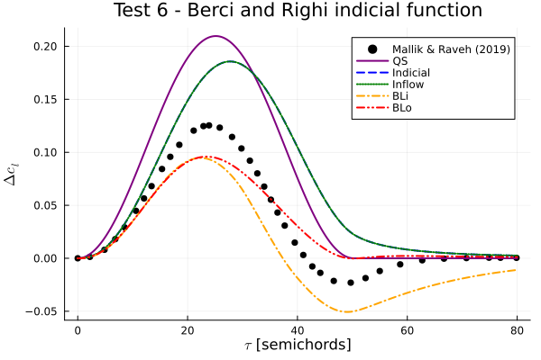

Gust response of an airfoil section
This example illustrates how to set up an aerodynamic analysis of gust response. While AeroBeams can't run a strictly aerodynamic analyses (only aeroelastic ones), that can be done in practice by using a one-element stiff beam supported at both ends, effectively removing structural deformation effects. We'll evaluate the response of the NACA 0012 airfoil to one-minus-cosine gusts through several tests, each with different pitch angle and gust length. The performance of the available aerodynamic solvers the gust indicial solvers will be assessed too.
The code for this example is available here.
Core function setup
The following core function solves our problem given the test case, the aerodynamic solver the gust indicial solver. Notice that we use the function create_OneMinusCosineGust with the appropriate arguments to streamline the process of creation of the gust.
using AeroBeams, DelimitedFiles
# Core function
function OMCgustTestsCore(aeroSolver,gustLoadsSolver,testCase)
# Set test case data
if testCase == 1
Ma = 0.2 # Mach number
U = 68.06 # Airspeed [m/s]
H = π # Normalized gust length
b = 0.40663 # Airfoil semichord [m]
τ = 2*H*b/U # Gust duration [s]
w = 2.3748 # Gust peak velocity [m/s]
t₀ = 80*b/U # Time of gust encounter [s]
tf = t₀ + 30*b/U # Total simulation time [s]
θ = 0*π/180 # Airfoil pitch angle [deg]
elseif testCase == 2
Ma = 0.2
U = 68.06
H = π
b = 0.40663
τ = 2*H*b/U
w = 2.3748
t₀ = 80*b/U
tf = t₀ + 30*b/U
θ = 10*π/180
elseif testCase == 3
Ma = 0.2
U = 68.06
H = π
b = 0.40663
τ = 2*H*b/U
w = 2.3748
t₀ = 80*b/U
tf = t₀ + 30*b/U
θ = 15*π/180
elseif testCase == 4
Ma = 0.2
U = 68.06
H = 8π
b = 0.40663
τ = 2*H*b/U
w = 2.3748
t₀ = 80*b/U
tf = t₀ + 80*b/U
θ = 0*π/180
elseif testCase == 5
Ma = 0.2
U = 68.06
H = 8π
b = 0.40663
τ = 2*H*b/U
w = 2.3748
t₀ = 80*b/U
tf = t₀ + 80*b/U
θ = 10*π/180
elseif testCase == 6
Ma = 0.2
U = 68.06
H = 8π
b = 0.40663
τ = 2*H*b/U
w = 2.3748
t₀ = 60*b/U
tf = t₀ + 80*b/U
θ = 15*π/180
end
# Gust
gust = create_OneMinusCosineGust(initialTime=t₀,duration=τ,verticalVelocity=w)
# Wing surface
airfoil = deepcopy(NACA0012)
update_Airfoil_params!(airfoil,Ma=Ma,U=U,b=b)
derivationMethod = AD()
surf = create_AeroSurface(solver=aeroSolver,gustLoadsSolver=gustLoadsSolver,derivationMethod=derivationMethod,airfoil=airfoil,c=2*b,normSparPos=1/4,updateAirfoilParameters=true)
# Wing beam
L = 1
nElem = 1
ρA = 1
∞ = 1e12
wing = create_Beam(name="beam",length=L,nElements=nElem,S=[isotropic_stiffness_matrix(∞=∞)],I=[inertia_matrix(ρA=ρA)],rotationParametrization="E321",p0=[0;0;θ],aeroSurface=surf)
# BCs
clamp1 = create_BC(name="clamp1",beam=wing,node=1,types=["u1A","u2A","u3A","p1A","p2A","p3A"],values=[0,0,0,0,0,0])
clamp2 = create_BC(name="clamp2",beam=wing,node=nElem+1,types=["u1A","u2A","u3A","p1A","p2A","p3A"],values=[0,0,0,0,0,0])
# Model
OMCgustTests = create_Model(name="OMCgustTests",beams=[wing],BCs=[clamp1,clamp2],v_A=[0;U;0],gust=gust)
# Set system solver options
σ0 = 1.0
maxIter = 20
rtol = 1e-12
NR = create_NewtonRaphson(initialLoadFactor=σ0,maximumIterations=maxIter,relativeTolerance=rtol,displayStatus=false,alwaysUpdateJacobian=false,minConvRateAeroJacUpdate=1.2,minConvRateJacUpdate=1.2)
# Time variables
steps = 1000
Δt = (tf-t₀)/steps
# Initial velocities update options
initialVelocitiesUpdateOptions = InitialVelocitiesUpdateOptions(maxIter=2,tol=1e-8, displayProgress=false, relaxFactor=0.5, Δt=Δt/10)
# Create and solve dynamic problem
problem = create_DynamicProblem(model=OMCgustTests,finalTime=tf,Δt=Δt,systemSolver=NR,initialVelocitiesUpdateOptions=initialVelocitiesUpdateOptions)
solve!(problem)
# Unpack numerical solution
t = problem.savedTimeVector
cn = [problem.aeroVariablesOverTime[i][1].aeroCoefficients.cn for i in 1:length(t)]
ct = [problem.aeroVariablesOverTime[i][1].aeroCoefficients.ct for i in 1:length(t)]
cl = @. cn*cos(θ) + ct*sin(θ)
# Load reference data
if testCase == 1
ΔclRef = readdlm(pkgdir(AeroBeams)*"/test/referenceData/gustTests/Hpi_A0.txt")
elseif testCase == 2
ΔclRef = readdlm(pkgdir(AeroBeams)*"/test/referenceData/gustTests/Hpi_A10.txt")
elseif testCase == 3
ΔclRef = readdlm(pkgdir(AeroBeams)*"/test/referenceData/gustTests/Hpi_A15.txt")
elseif testCase == 4
ΔclRef = readdlm(pkgdir(AeroBeams)*"/test/referenceData/gustTests/H8pi_A0.txt")
elseif testCase == 5
ΔclRef = readdlm(pkgdir(AeroBeams)*"/test/referenceData/gustTests/H8pi_A10.txt")
elseif testCase == 6
ΔclRef = readdlm(pkgdir(AeroBeams)*"/test/referenceData/gustTests/H8pi_A15.txt")
end
# Time index of gust encounter
ind = floor(Int,t₀/Δt)+1
# Non-dimensional time and cl increment vectors
τ = U/b * (t[ind:end] .- t[ind])
Δcl = cl[ind:end] .- cl[ind]
return τ,Δcl,ΔclRef
endProblem setup
To setup the problem, we define which tests will be run, and which aerodynamic and gust indicial solvers will be used. Notice that BLi stands for our modified Beddoes-Leishman model, whereas BLo is the original version.
# Tests range
tests = collect(1:6)
# Aerodynamic and gust indicial solvers
aeroSolvers = [QuasiSteady(); Indicial(); Inflow(); BLi(); BLo()]
gustLoadsSolvers = [IndicialGust("Kussner"); IndicialGust("Berci&Righi")]
# Initialize outputs
τ = Array{Vector{Float64}}(undef,length(aeroSolvers),length(gustLoadsSolvers),length(tests))
Δcl = Array{Vector{Float64}}(undef,length(aeroSolvers),length(gustLoadsSolvers),length(tests))
ΔclRef = Array{Matrix{Float64}}(undef,length(aeroSolvers),length(gustLoadsSolvers),length(tests))Problem solving
We now loop the configurations to solve for each one of them.
# Loop aerodynamic solver
for (i,aeroSolver) in enumerate(aeroSolvers)
# Loop gust solver
for (j,gustLoadsSolver) in enumerate(gustLoadsSolvers)
# Loop test cases
for (k,testCase) in enumerate(tests)
# Solve for current configuration
τ[i,j,k],Δcl[i,j,k],ΔclRef[i,j,k] = OMCgustTestsCore(aeroSolver,gustLoadsSolver,testCase)
end
end
endLet's compare the accuracy of the aerodynamic formulations by plotting the development of the lift coefficient. The indicial functions by Kussner (approximation of analytical) and by Berci and Righi (semi-analytical) compare well to the CFD data by Mallik and Raveh. The linear models show good results (except the quasi-steady one) for test 2, in which the airfoil is pitched by 10 degrees. However, at test 6 the dynamic stall models fare better, since the airfoil is at a high angle of attack (15 degrees) and stalls upon encountering the gust.
using Plots, ColorSchemes
colors = get(colorschemes[:rainbow], LinRange(0, 1, length(aeroSolvers)))
gr()
labels = ["QS" "Indicial" "Inflow" "BLi" "BLo"]
linestyles = [:solid :dash :dot :dashdot :dashdotdot]
# Test 2 - Kussner indicial function
plt21 = plot(xlabel="\$\\tau\$ [semichords]", ylabel="\$\\Delta c_l\$", title="Test 2 - Kussner indicial function")
scatter!(ΔclRef[1,1,2][1,:], ΔclRef[1,1,2][2,:], color=:black, ms=4, label="Mallik & Raveh (2019)")
for (i,aeroSolver) in enumerate(aeroSolvers)
plot!(τ[i,1,2], Δcl[i,1,2], color=colors[i], lw=2, ls=linestyles[i], label=labels[i])
end
# Test 2 - Berci and Righi indicial function
plt22 = plot(xlabel="\$\\tau\$ [semichords]", ylabel="\$\\Delta c_l\$", title="Test 2 - Berci and Righi indicial function")
scatter!(ΔclRef[1,1,2][1,:], ΔclRef[1,1,2][2,:], color=:black, ms=4, label="Mallik & Raveh (2019)")
for (i,aeroSolver) in enumerate(aeroSolvers)
plot!(τ[i,1,2], Δcl[i,1,2], color=colors[i], lw=2, ls=linestyles[i], label=labels[i])
end
# Test 6 - Kussner indicial function
plt61 = plot(xlabel="\$\\tau\$ [semichords]", ylabel="\$\\Delta c_l\$", title="Test 6 - Kussner indicial function")
scatter!(ΔclRef[1,1,6][1,:], ΔclRef[1,1,6][2,:], color=:black, ms=4, label="Mallik & Raveh (2019)")
for (i,aeroSolver) in enumerate(aeroSolvers)
plot!(τ[i,1,6], Δcl[i,1,6], color=colors[i], lw=2, ls=linestyles[i], label=labels[i])
end
# Test 6 - Berci and Righi indicial function
plt62 = plot(xlabel="\$\\tau\$ [semichords]", ylabel="\$\\Delta c_l\$", title="Test 6 - Berci and Righi indicial function")
scatter!(ΔclRef[1,1,6][1,:], ΔclRef[1,1,6][2,:], color=:black, ms=4, label="Mallik & Raveh (2019)")
for (i,aeroSolver) in enumerate(aeroSolvers)
plot!(τ[i,2,6], Δcl[i,2,6], color=colors[i], lw=2, ls=linestyles[i], label=labels[i])
end  
This page was generated using Literate.jl.